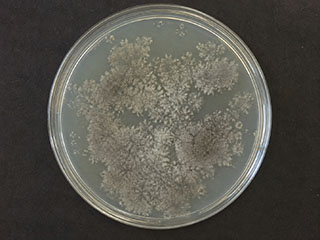

微生物研究室近日完成北郊水库水样、沉积物及附着物样品中部分分离菌株的初步鉴定。其中一株在培养过程中形成较明显的灰色菌落，根据培养特征、形态观察和生理生化试验，初步鉴定为链霉菌属（Streptomyces sp.），编号为JH-99-17。
进一步培养观察表明，该菌株气生菌丝由灰白色逐渐转为灰色，并产生明显土腥气味。结合现场调查及样品培养情况，课题组初步认为，该菌株可能与北郊水库部分区域发现的灰白色附着物以及夏季水体土腥味有关。
经培养观察和多项试验，未发现该菌株具有致病性。结合水质卫生检验结果，目前没有证据表明该菌株会对人体健康造成危害。有关培养记录、实验材料及菌株已登记保存。